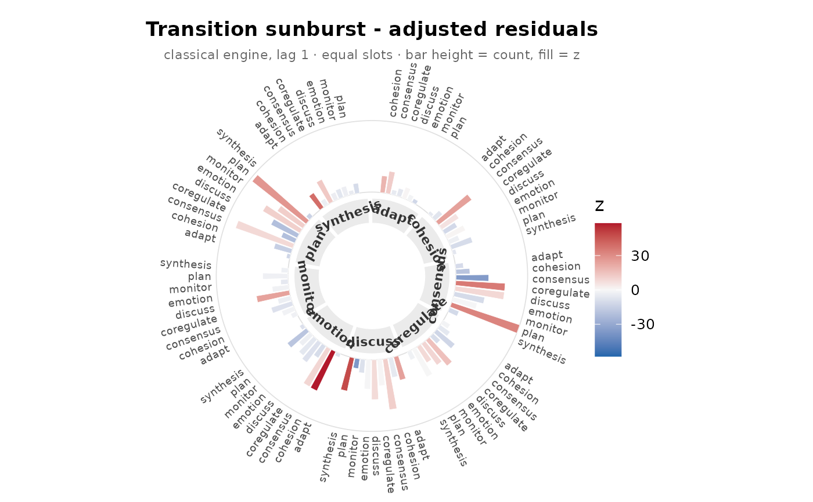
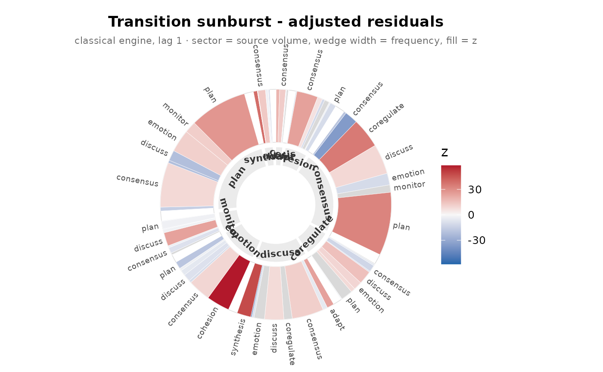

plot_polar() draws the transitions of a fit as a polar sunburst with
ggplot2: the source states are arranged around an inner ring and,
outside each source, the transitions leaving it. It reads like a set of pie
charts joined into one figure: for every state, where the process goes next
and how often, and, through the fill colour, which of these moves are more or
less frequent than independence predicts.
The sunburst has two styles. In the rose style (default) every target has a slot of equal angle within its source and the bar height shows the count or the probability, so that every target can be labelled. In the wedge style the angle of each wedge is the transition's share of its source's outgoing transitions, and very small wedges are dropped. The fill is the adjusted residual on the diverging scale of the residual heatmap (red over-represented, blue avoided), or the probability or lift.
The same display is plot(fit, type = "sunburst"). For the full
table use plot.lsa(); for a network layout, plot_transitions(); for
ribbons between states, plot_chords().
Arguments
- fit
An
lsafit fromlsa().- style
"rose"(default) or"wedge".- fill
Fill quantity:
"residuals"(default),"prob"or"lift".- size
For the rose style, bar height:
"count"(default) or"prob".- significant
Grey out transitions whose residual p-value is not below the fit's
alpha(defaultFALSE).- labels
Which targets to name:
"all","auto"(those with room) or"none". Default"all"for the rose and"auto"for the wedge style. Source names are always shown.- min_show
For the wedge style, drop wedges below this share of their source's outgoing transitions (default
0.01).- label_size
Label text size (default
3).- ...
Ignored; allows
plot(fit, type = "sunburst", ...).
Conditions
Errors carry the class lagdynamics_error and lagdynamics_bad_input
when the fit has no transitions to draw.
Examples
fit <- lsa(group_regulation)
plot_polar(fit)

plot_polar(fit, style = "wedge", significant = TRUE)
